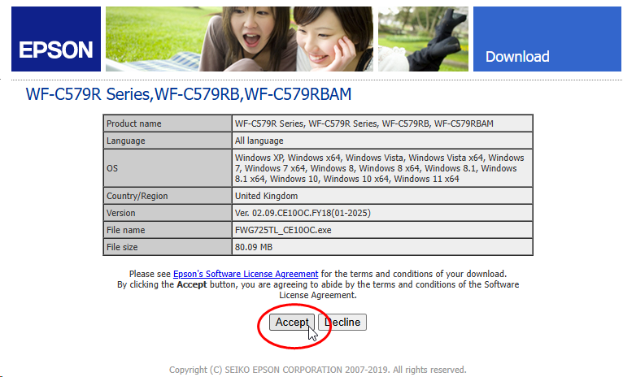
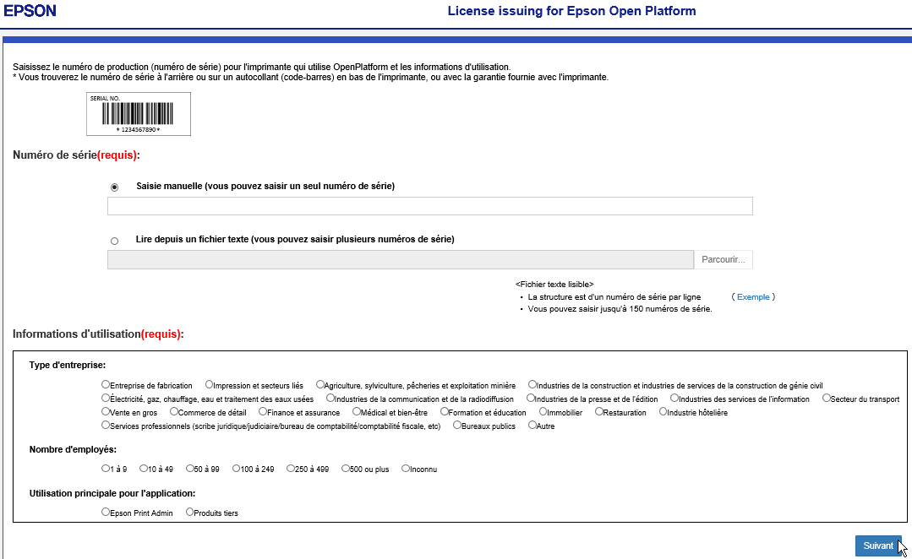
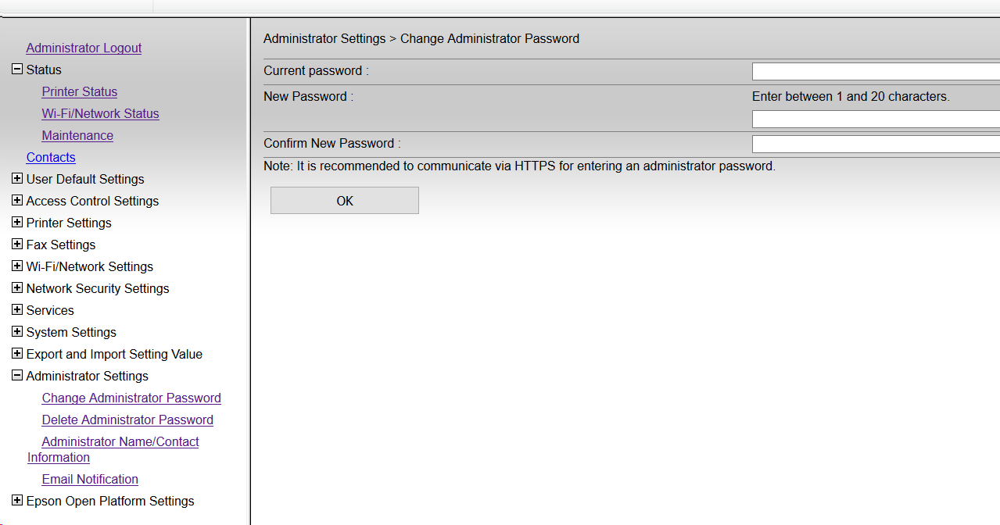

WES Epson - Prérequis et configuration préalable
Configurer les ports
Les ports réseau à ouvrir pour permettre le fonctionnement des WES sont les suivants :
| Source | Port | Protocole | Cible |
| Service Watchdoc
pour l'authentification, port sécurisé obligatoire |
TCP 80 |
HTTP |
Périphérique d'impression |
Installer Open Platform
Le périphérique doit supporter la technologie Open Platform, ce qui est matérialisé par le sigle présent à l’arrière du périphérique, près du numéro de série.
Il est également possible de déterminer si le périphérique supporte Open Platform via son numéro de série formé de 4 lettres suivies de 6 chiffres :
-
Modèles 5690 : le second chiffre doit être 2 : XXXX02NNNN ;
-
Autres modèles : le second chiffre doit être 1 : XXXX01NNNN.
Par défaut, comme le firmware standard ne contient pas Open Platform, il est nécessaire de le mettre à jour :
-
rendez- vous sur le site Centre de Support Epson https://www.epson.fr/fr_FR/support/;
-
recherchez votre modèle à l'aide des outils de recherche ;
-
une fois votre modèle trouvé, téléchargez son firmware ;
-
acceptez les termes du contrat de licence pour télécharger le firmware :

-
lancez et suivez les instructions de l'exécutable Epson Firmware Updater ;
Récupérer la clé produit Epson Open Plateform
Avant de configurer un WES Epson, il convient de récupérer la clé produit. Cette dernière se présente sous forme d'un fichier .csv. Pour l'obtenir :
-
rendez-vous sur le site web Epson dédié :
-
complétez le formulaire à l'aide du numéro de série de votre périphérique d'impression et des informations d'utilisation ;
-
cliquez sur bouton Suivant pour envoyer les informations relatives à votre périphérique ;

-
Le service Epson Open Platform de gestion des licences fournit un fichier .csv comportant la clé produit.
-
Enregistrez ce fichier .csv dans un dossier local du serveur Watchdoc. Vous devrez fournir le chemin d'accès à ce fichier lors de la configuration du profil WES, section Périphérique.
Créer le mot de passe administrateur
Pour permettre l’installation automatique du WES, il est nécessaire de créer un mot de passe administrateur sur le périphérique d'impression Epson Open Plateform :
-
rendez-vous sur le site web d'administrration du périphérique d'impression (http://ip_machine) ;
-
sur la page Change administrator Password> Administrator Settings, remplissez le formulaire.
-
cliquez sur le bouton OK pour valider le nouveau mot de passe.

-
Conservez ce mot de passe nécessaire pour la configuration de la section Périphérique du profil WES.